5.4 Mask RCNN¶
学习目标
-
说明Mask RCNN的结构特点
-
掌握Mask RCNN的RoIAlign方法
-
掌握Mask RCNN的mask原理
-
知道Mask RCNN的损失函数
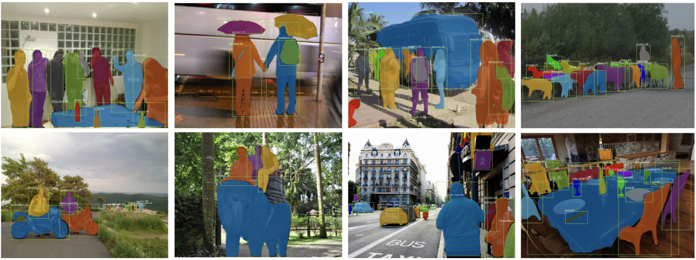
上图是MaskRCNN预测的结果
1.1 Mask RCNN流程¶
Mask-RCNN是一个实例分割（Instance segmentation）网络框架，通过增加不同的分支可以完成目标分类，目标检测，实例分割等多种任务。具体来讲，就是在Faster-RCNN的基础上增加了一个分支，在实现目标检测的同时分割目标像素，其分支结构如下图所示：
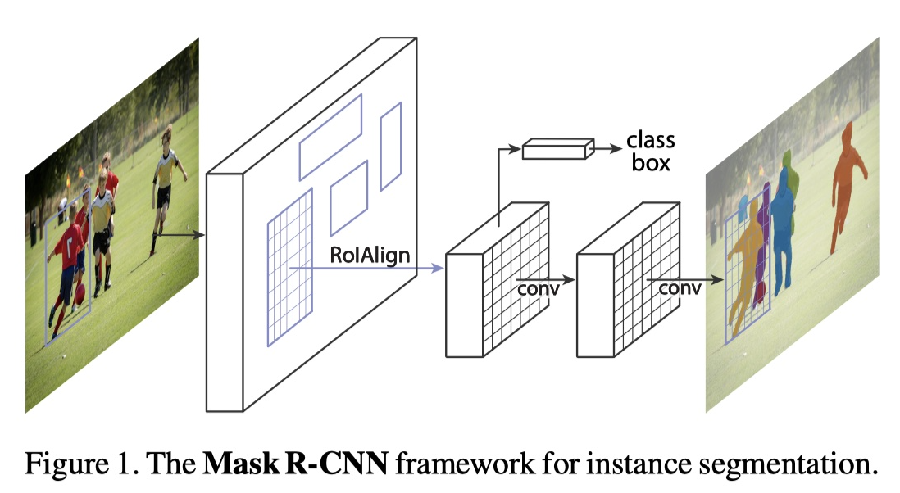
掩码分支是作用于每个RoI区域（候选区域），以像素到像素的方式预测分割掩码，得到实例分割的结果。
Mask RCNN的整体结构如下图所示：
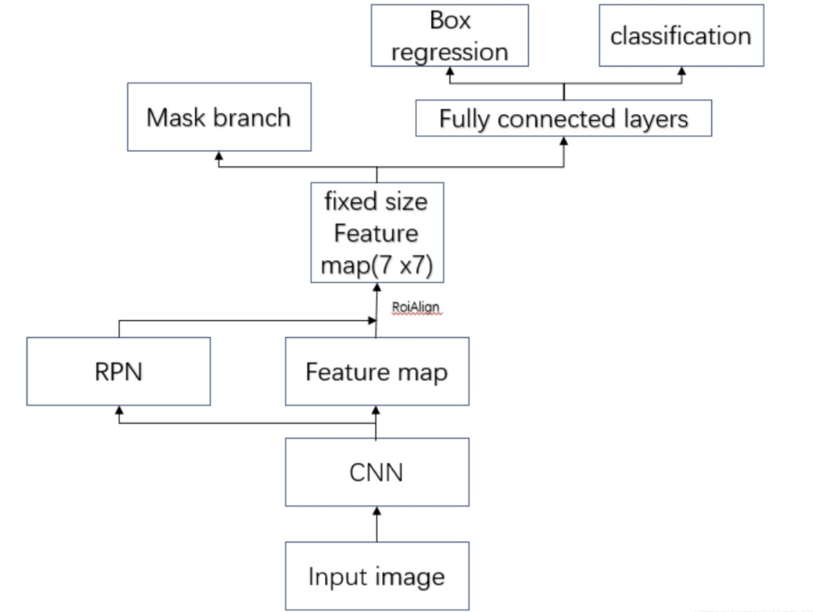
整体的流程是：
- 输入要处理的图片。
- 将图片送入到CNN特征提取网络得到特征图。
- 然后对特征图的每一个像素位置设定固定个数的ROI（对应于在FasterRCNN中的Anchor），然后将ROI区域送入RPN网络进行二分类(前景和背景)以及坐标回归，以获得精炼后的ROI区域（对应于FasterRCNN中的候选区域）。
- 对上个步骤中获得的ROI区域执行ROIAlign操作（是对ROIPooling的改进），即先将原图和feature map的pixel对应起来，然后将feature map和固定大小的feature对应起来。
- 最后对这些ROI区域进行多类别分类，候选框回归和引入FCN生成Mask，完成实例分割任务。
整个过程中与FasterRCNN中不同的是ROIAlign和分割分支，其他都是相同的，接下来我们着重介绍这两个内容。
1.2 ROIAlign¶
1.2.1 原理介绍¶
FasterRCNN中的ROIPooling过程如下所示：

它的流程是：
-
输入图片的大小为800x800，其中狗这个目标框的大小为665x665，经过VGG16网络之后获得的特征图尺寸为800/32x800/32=25x25，其中32代表VGG16中的5次下采样（步长为2）操作。那么，对于狗这个目标，我们将其对应到特征图上得到的结果是665/32x665/32=20.78x20.78=20x20，因为坐标要保留整数所以这里引入了第一个量化误差即舍弃了目标框在特征图上对应长宽的浮点数部分。
-
接下来需要将这个20x20的ROI区域映射为7x7的ROI特征图，根据ROI Pooling的计算方式，其结果就是20/7x20/7=2.86x2.86，同样执行取整操作操作后ROI特征区域的尺寸为2x2，这里引入了第二次量化误差。
-
从上面的分析可以看出，这两次量化误差会导致原始图像中的像素和特征图中的像素进行对应时出现偏差，例如上面将2.86量化为2的时候就引入了0.86的偏差，这个偏差映射回原图就是0.86x32=27.52，可以看到这个像素偏差是很大的，而且这仅仅考虑了第二次的量化误差，所以这会影响整个算法的性能。
为了缓解ROI Pooling量化误差过大的问题，MaskRCNN提出了ROIAlign，ROIAlign没有使用量化操作，而是使用了双线性插值估计非整数点的像素值。这一过程如下图所示：
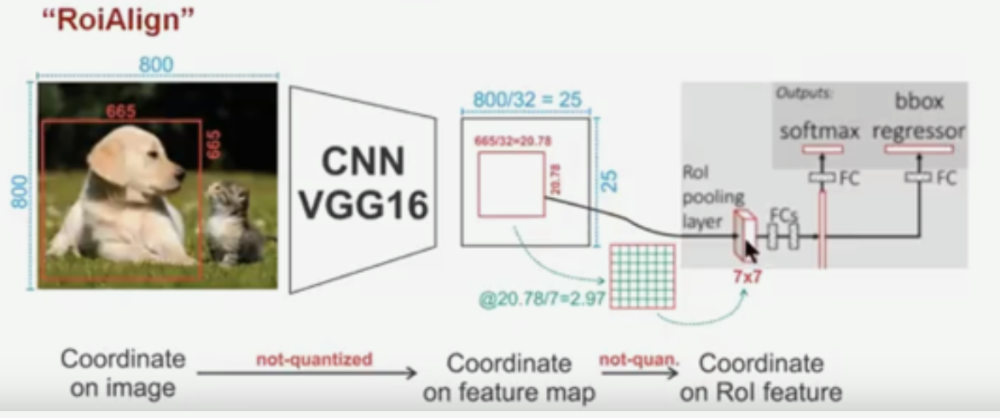
针对上图的流程是：
-
输入图片的大小为800x800，其中狗这个目标框的大小为665x665，经过VGG16网络之后获得的特征图尺寸为800/32x800/32=25x25，其中32代表VGG16中的5次下采样（步长为2）操作。那么，对于狗这个目标，我们将其对应到特征图上得到的结果是665/32x665/32=20.78x20.78，此时，没有像RoiPooling那样就行取整操作，而是保留浮点数。
-
接下来需要将这个20.78x20.78的ROI区域映射为7x7的ROI特征图，结果就是20.78/7x20.78/7=2.97x2.97，即每个小区域的大小为2.97x2.97。
-
假定每个小区域采样点数为4，也就是说，对于每个2.97*2.97的小区域，平分四份，每一份取其中心点位置，而中心点位置的像素，采用双线性插值法进行计算，这样，就会得到四个点的像素值，如下图：
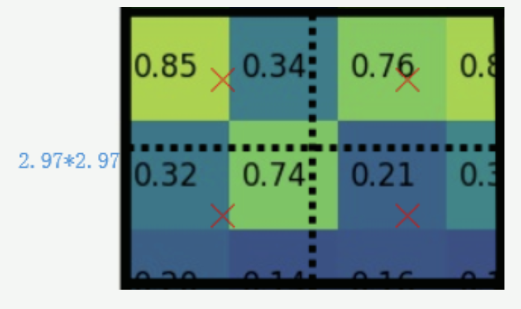
上图中，四个红色叉叉‘×’的像素值是通过双线性插值算法计算得到的。
- 最后，取四个像素值中最大值（最大池化）作为这个小区域(即：2.97x2.97大小的区域)的像素值，如此类推，同样是49个小区域得到49个像素值，组成7x7大小的特征图。
双线性插值是一种图像缩放填充算法，它充分的利用了原图中虚拟点（比如20.56这个浮点数，像素位置不是整数值，而是浮点值）四周的真实存在的像素值来共同决定目标图中的一个像素值，即可以将20.56这个虚拟的位置点对应的像素值估计出来。
1.2.2 实现效果¶
在tensorFlow中实现时使用：
tf.image.crop_and_resize(
image, boxes, box_indices, crop_size, method='bilinear', extrapolation_value=0,
name=None
)
参数介绍：
-
image: 表示特征图
-
boxes：指需要划分的ROI区域，输入格式为[ymin，xmin，ymax，xmax]，注意是归一化的结果。
假设候选区域坐标是[y1,x1,y2,x2]，那么想要得到相应正确的crop图形就一定要归一化,即图片的长度是[w,h],则实际输入的boxes为[y1/h,x1/w,y2/h,x2/w]，超出1的部分使用黑色0进行填充。
-
box_indice: 是boxes和image之间的索引，即box对应的图像索引
-
crop_size: 表示RoiAlign之后的候选区域的大小。
- method：插值方法，默认是双线性插值
下面我们利用两张图片看下ROIAlign的效果：
- 导入工具包
import tensorflow as tf
import matplotlib.pyplot as plt
- 原图像读取和展示
# 图像读取
img = plt.imread('Trump.jpg')/255.
img2 = plt.imread('Trump2.jpg')/255.
# 图像展示
plt.figure(figsize=(10,8))
plt.subplot(1,2,1)
plt.imshow(img)
plt.subplot(1,2,2)
plt.imshow(img2)
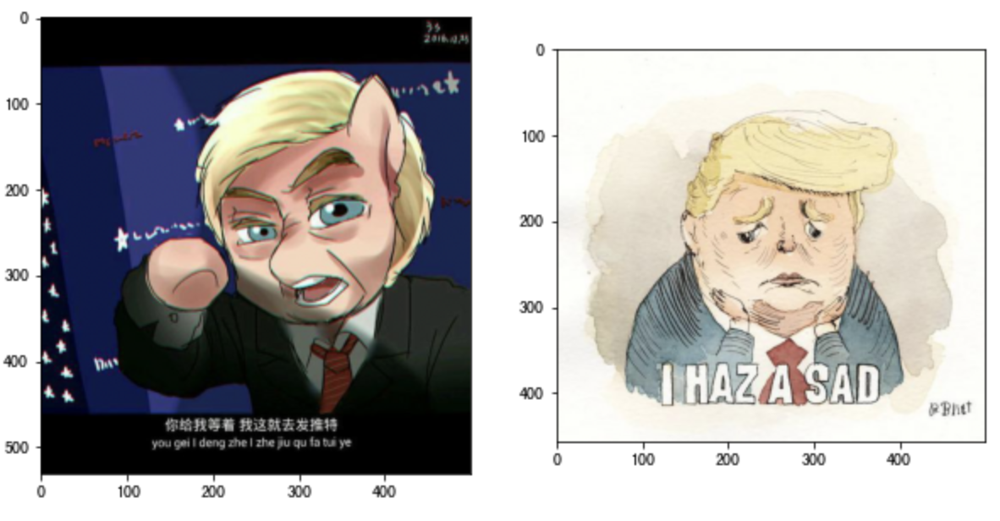
- 构建batch_size数据（batch_size=2）
# 对图像进行类型转换，并添加batch维
img = tf.convert_to_tensor(img, dtype=tf.float32)
img = tf.expand_dims(img, axis=0)
img = tf.image.resize(img, (500,500))
img2 = tf.convert_to_tensor(img2, dtype=tf.float32)
img2 = tf.expand_dims(img2, axis=0)
img2 = tf.image.resize(img2, (500,500))
# 将两个图像拼接在一起
img = tf.concat([img, img2], axis=0)
print('img:', img.shape)
输出为：
img: (2, 500, 500, 3)
一个batch中包含2个图像，每个图像的大小为500x500x3，理解为两个特征图
- ROIAlign
# 进行ROIAlign处理：特征图，2个boxes，分别对应图像索引0和1，ROIAlign后的大小为50x50
out = tf.image.crop_and_resize(img, [[0.5, 0.5, 1.0, 1.0], [0.5, 0.5, 1.5, 1.5]], [0, 1], crop_size=(50, 50))
print('out:', a.shape)
输出为：
out: (2, 50, 50, 3)
- 效果展示
plt.figure(figsize=(10,8))
# 尺寸调整后的图像
plt.subplot(2,2,1)
plt.imshow(img[0])
plt.subplot(2,2,2)
plt.imshow(img[1])
# ROIAlign的结果
plt.subplot(2,2,3)
plt.imshow(a[0])
plt.subplot(2,2,4)
plt.imshow(a[1])
plt.show()
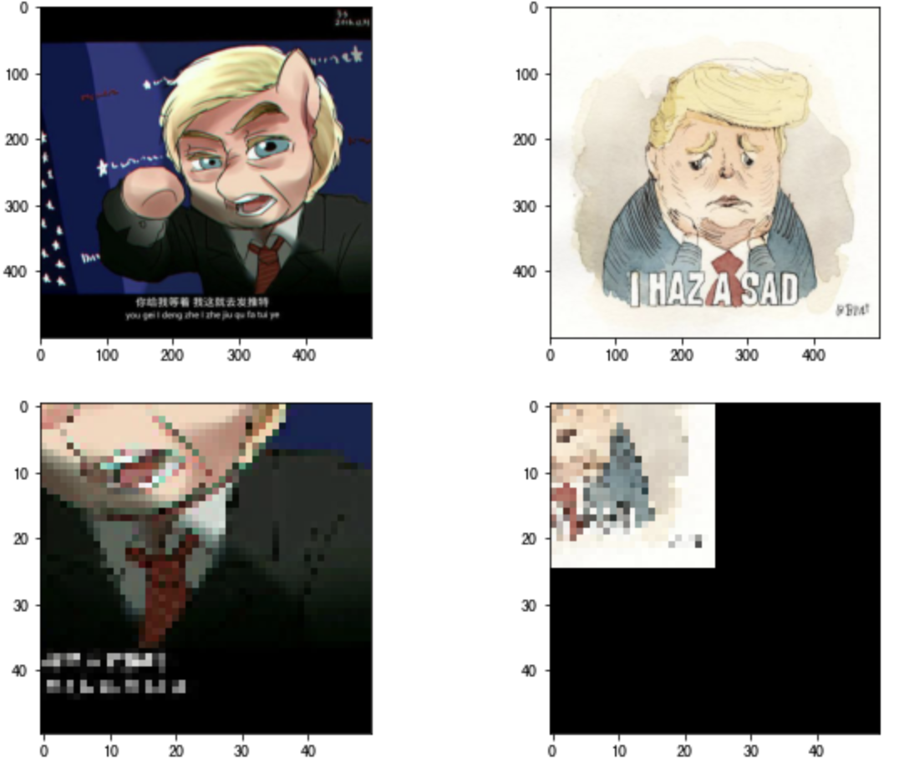
1.3 网络结构¶
上述已经介绍了Mask-RCNN 的结构与FasterRCNN是相同的，增加了一个分割的头，如下所示：
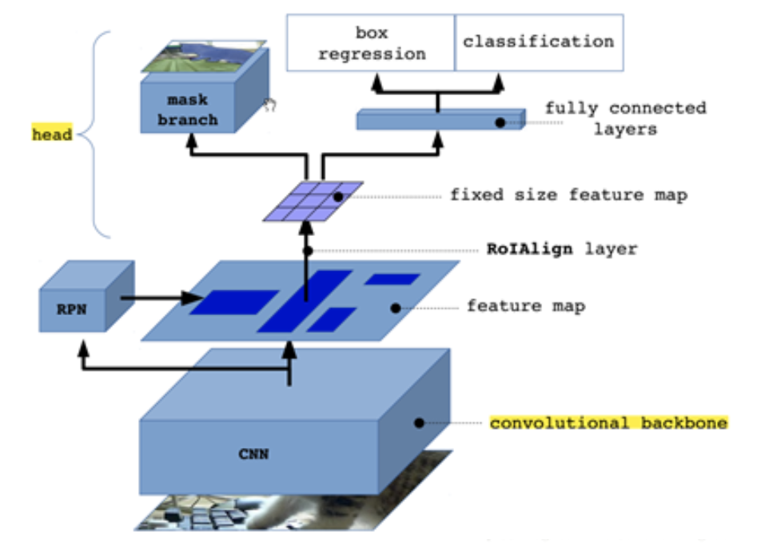
骨干网络ResNet-FPN用于特征提取，RPN网络进行候选区域的提取，ROIAlign获取固定大小的特征图，头部网络包括边界框识别（分类和回归）+mask预测，具体如下所示：
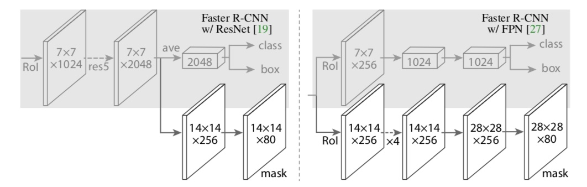
mask分支是一个全卷积网络，实际工作中我们使用右图较多一些，其中使用2x2的反卷积进行上采样。预测时 mask 分支输出结果 resize 到 RoI 的大小, 然后应用 0.5 的阈值进行二值化得到最终的分割结果。
1.4 损失函数¶
Mask-RCNN在Faster-RCNN的基础上多了一个ROIAligin和Mask预测分支，因此Mask R-CNN的损失也是多任务损失：
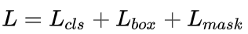
L_{cls}和L_{box} 与faster rcnn的定义没有区别。具体来看下L_{mask} 。
Mask分支对每个ROI区域产生一个mxmxK的输出特征图，即K个的二值掩膜图像，其中K代表目标种类数。对于预测的二值掩膜输出，对每一个像素点应用sigmoid函数，整体损失定义为平均二值交叉损失熵。对于真实类别为𝑘的𝑅𝑜𝐼，仅在第k个掩码上计算损失（其他掩码输出不计入）。这样做解耦了掩膜和种类预测。
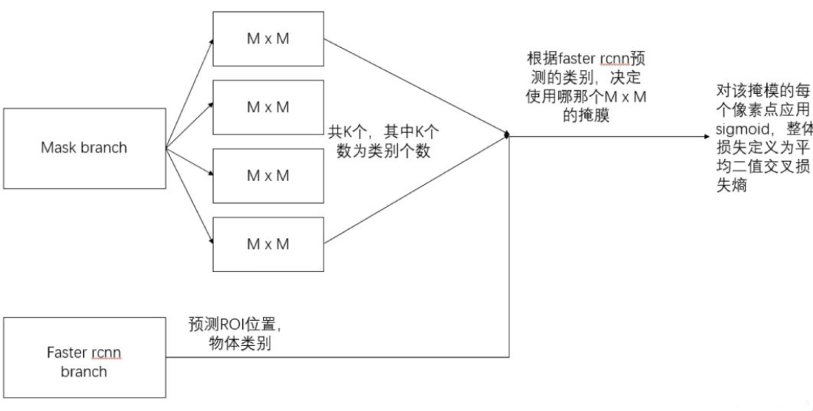
不像FCN的做法，在每个像素点上应用softmax函数，整体采用的多任务交叉熵，这样会导致类间竞争，最终导致分割效果差。
总结
- 说明Mask RCNN的结构特点
在Faster-RCNN的基础上增加了一个分支，在实现目标检测的同时分割目标像素
- 掌握Mask RCNN的RoIAlign方法
ROIAlign没有使用量化操作，而是使用了双线性插值估计非整数点的像素值
- 掌握Mask RCNN的mask原理
mask分支是一个全卷积网络，使用2x2的反卷积进行上采样
- 知道Mask RCNN的损失函数
多任务损失函数：有分类，回归和分割三部分组成